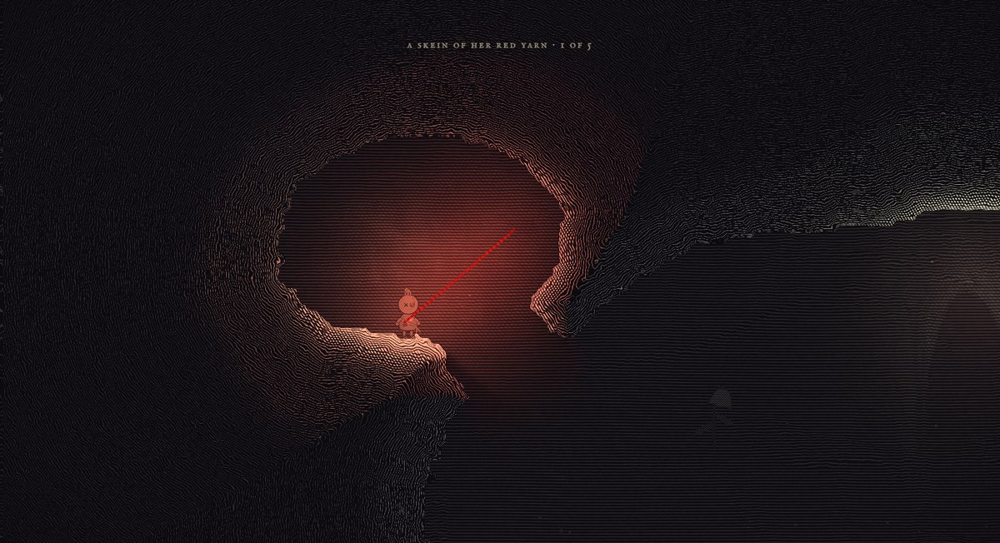
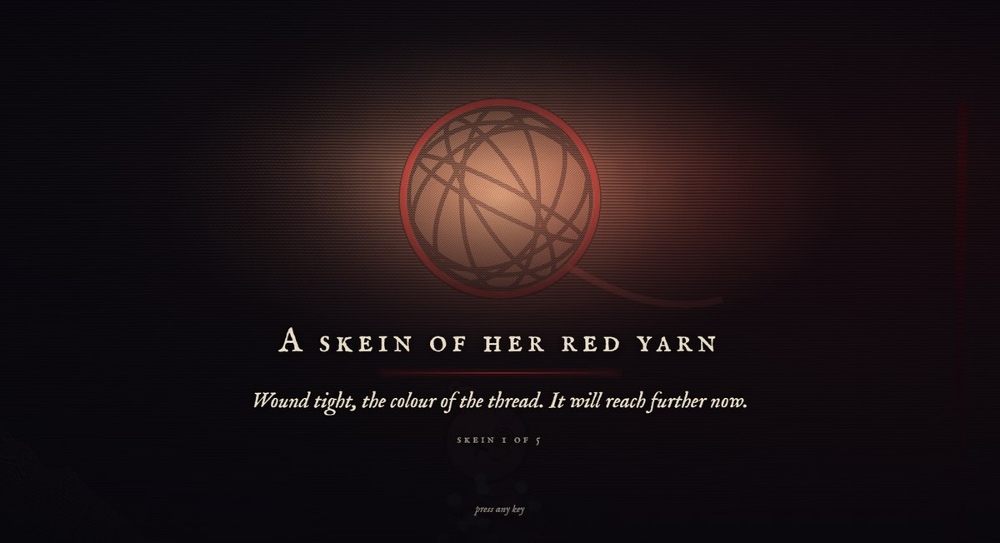
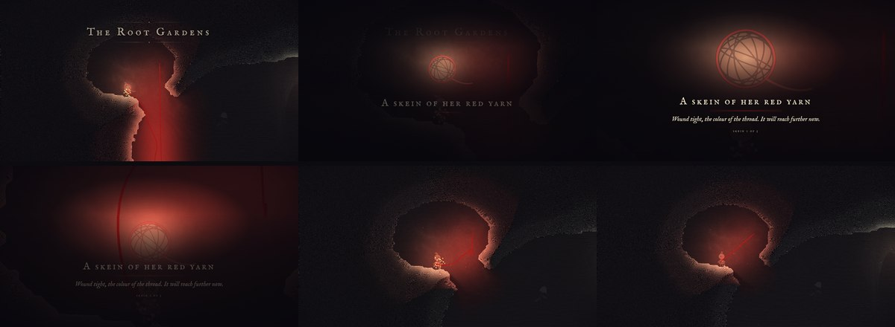
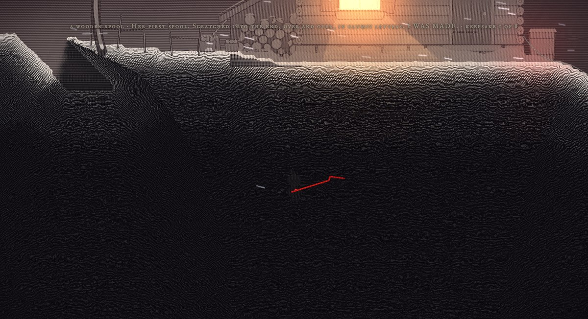
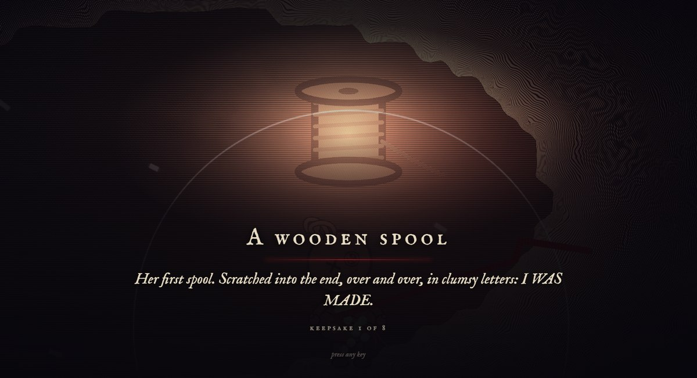

The world stopswhile you look at what you found
Finding a keepsake or a skein is now a moment of its own. Time slows to a stop and the cave darkens around her. The thing rises from where it lay into a warm light above her head, and she looks up at it. Its name, its words and the count come in one after another, in large type. It waits there until you press something, then sinks into her chest and the world moves again.
Also when I find a new collectable item - show it full screen with a description text in bigger letters than now, darken the background and pause the game until I press any button. Everything should be smooth. These collectibles should feel meaningful.


BeforeAfterDrag the thread to compare
Before, a find was a single line of small capitals at the top of the screen, gone in three seconds. A keepsake's words ran the whole width of the screen in that small type, over the moving snow.

| When | What happens |
|---|---|
| The pickup | Time runs down to a stop over about half a second. Music and ambience dip. A low singing bowl, and a slow harp note half a second later. |
| 0–1.2 s | The item rises along a soft arc from where it lay to above her head, growing to about 2.4 times its size. The camera closes in until the view is under 3 m tall. The screen darkens around it, and she tips her head back to look. |
| 0.7 s | Its name, in large small capitals, with a red rule that draws out under it. |
| 1.15 s | Its words, in large italic. The keepsakes' are the lines written for them; a skein's says the thread will now reach further. |
| 1.7 s | The count: skein 2 of 5, keepsake 3 of 8, or the last of them. |
| 2.6 s | press any key (or any button on a gamepad), breathing slowly at the bottom. |
| A key, button or click | Counted only after 1.6 s and only as a fresh press, so the key you were running with can't skip it. The words fade first. The item shrinks and drops into her chest, where the red heart is, with sparks and a soft tie sound. The dark lifts, the camera eases back, and time picks up. |


BeforeAfterDrag the thread to compare
The Cellar's spool. The first of eight.
I ran it in the hidden test window: a skein in the Root Gardens and the Cellar's keepsake were picked up with real physics. The test logged the showcase's phase and timing, and that the doll stayed exactly where she was while it was up. The key press after it closed it, she ran on, and no errors came up. My first version lit the item too strongly: the skein washed out to a pale disc. The light is now about half as strong, and the yarn's turns and red show clearly.
app/src/main.jsstartShow / showUpdate: the timing, the rise and the fall, the camera framing, time running down, and the fresh-press rule.app/src/props.jsdrawShowItem: the keepsakes and the skein drawn at any scale (Pen now takes a scale).app/index.html · app/style.cssThe #show overlay: the darkening, and the name, words and count coming in one by one.app/src/world.js · draw.jsThe warm light on the held item; it is drawn over her.